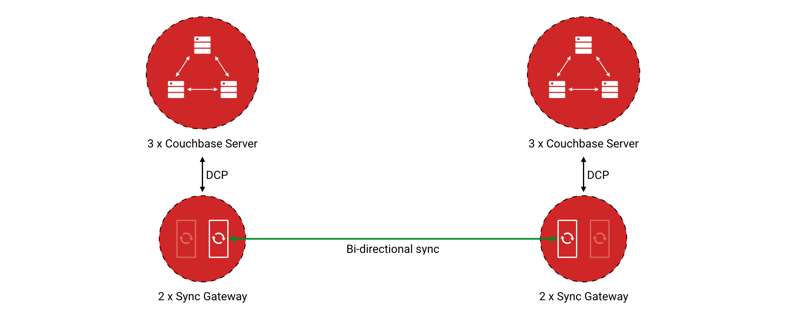
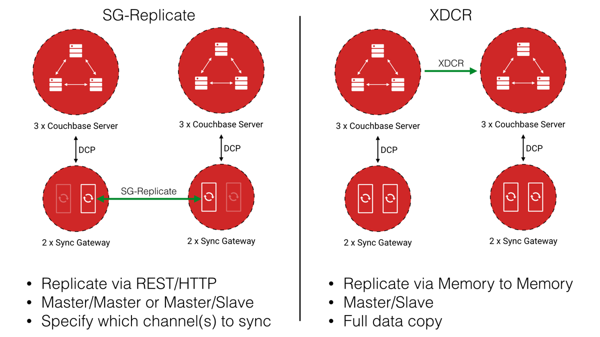

Sync Gateway has the ability to run active one way replications between two Sync Gateway databases. Documents go through the Sync Function on the target Sync Gateway instance which ensures that access permissions are updated. On the architecture diagram below, any changes that users/systems make on either Sync Gateway instance will be replicated to the other Sync Gateway instance.

Note: A Sync Gateway database can also be referred to as a namespace for documents, the data is always stored in Couchbase Server.
Features:
- JSON configuration to specify replications
- Supports multiple replications running concurrently
- Can run both OneShot and Continuous replications
- Does not store anything persistently
- Stateless -- can be interrupted/restarted anytime without negative side effects
- Filter replications using channels
Limitations:
- Can only replicates SG databases that are hosted on recent versions of Sync Gateway (after commit 50d30eb3d on March 7, 2014)
Running replications via the REST API
A replication is run by sending a POST request to the server endpoint /_replicate, with a JSON object defining the replication parameters. Both one-shot and continuous replications can be run. Each replication is one-way between two local or remote Sync Gateway databases. Multiple replications can run simultaneously, supporting bi-directional replications and different replication topologies. Be aware that both databases being synchronized should have the same sync function, otherwise it could lead to unexpected behaviour.
These parameters start a one-shot replication between two databases on the local Sync Gateway instance. The request will block until the replication has completed.
{
"source": "db",
"target": "db-copy"
}
These parameters start a one-shot replication between one database on the local Sync Gateway instance and one on a remote Sync Gateway instance. The request will return immediately and the replication will run asynchronously.
{
"source": "db",
"target": "http://example.com:4985/db-copy",
"async":true
}
These parameters start a continuous replication between one database on the local Sync Gateway instance and one on a remote Sync Gateway instance with the user provided replication_id. The request will return immediately and the replication will run asynchronously.
{
"replication_id":"my-named-replication",
"source": "db",
"target": "http://example.com:4985/db-copy",
"continuous":true
}
These parameters start a continuous replication between one database on the local Sync Gateway instance and one on a remote Sync Gateway instance. The replicator will batch up to 1000 revisions at a time, this will improve replication performance but will use more memory resources. Source database documents will be filtered so that only those tagged with the channel names "channel1" or "channel2" are replicated.
{
"source": "db",
"target": "http://example.com:4985/db-copy",
"continuous":true,
"changes_feed_limit":1000,
"filter":"sync_gateway/bychannel",
"query_params":["channel1","channel2"]
}
Configuration Properties
The _replicate JSON Object supports the following properties.
| Name | Type | Description | Default |
|---|---|---|---|
source |
URL | Required. A URL pointing to the source database for the replication, the URL may be relative i.e. just the name of a local database on the Sync Gateway instance. The URL may point to the Admin REST API which will replicate all documents in the DB, or it may point to the public REST API which will only copy documents in the users assigned channels. | none |
target |
URL | Required. A URL pointing to the target database for the replication, the URL may be relative i.e. just the name of a local database on the Sync Gateway instance. The URL may point to the Admin REST API or it may point to the public REST API, this will impact the behaviour of the target database sync function. | none |
continuous |
Boolean | Optional. Indicates whether the replication should be a one-shot or continuous replication. | false |
filter |
String | Optional. Passes the name of filter to apply to the source documents, currently the only supported filter is "sync_gateway/bychannel", this will replicate documents only from the set of named channels. | none |
query_params |
Object | Optional. Passes parameters to the filter, for the "sync_gateway/bychannel" filter the value should be an array or channel names (JSON strings). |
none |
cancel |
Boolean | Optional. Indicates that a running replication task should be cancelled, the running task is identified by passing its replication_id or by passing the original source and target values. | false |
replication_id |
String | Optional. If the cancel parameter is true then this is the id of the active replication task to be cancelled, otherwise this is the replicationid to be used for the new replication. If no replicationid is given for a new replication it will be assigned a random UUID. | false |
async |
Boolean | Optional. Indicates that a one-shot replication should be run asynchronously and the request should return immediately. Replication progress can be monitored by using the _active_tasks resource. | false |
changes_feed_limit |
Number | Optional. The maximum number of change entries to pull in each loop of a continuous changes feed. |
50 |
Running replication on startup
If you want to run replications as soon as Sync Gateway starts, you can define replications in the top level "replications" property of the Sync Gateway configuration, the "replications" value is an array of objects, each object defines a single replication, the object properties are the same as those for the _replicate end-point on the Admin REST API.
One-shot replications are always run asynchronously even if the "async" property is not set to true.
A One-shot replication that references a local database for either source or target, will be run after a short delay (5 seconds) in order to allow the local REST API's to come up. Replications may be given a user defined "replication_id" otherwise Sync Gateway will generate a random UUID. Replications defined in config may not contain the "cancel" property.
{
"log":["*"],
"replications":[
{
"source": "db",
"target": "db-copy"
},
{
"source": "db",
"target": "http://example.com:4985/db-copy"
},
{
"replication_id":"continuous-remote-local",
"source": "http://example.com:4985/db-backup",
"target": "db"
"continuous":true
},
{
"replication_id":"continuous-filtered",
"source": "db",
"target": "http://example.com:4985/db-copy"
"continuous":true,
"changes_feed_limit":1000,
"filter":"sync_gateway/bychannel",
"query_params":["channel1","channel2"]
}
],
"databases": {
"db": {
"server": "walrus:",
"bucket": "db",
"users": {
"GUEST": {"disabled": false, "admin_channels": ["*"]}
}
},
"db-copy": {
"server": "walrus:",
"bucket": "db-copy",
"users": {
"GUEST": {"disabled": false, "admin_channels": ["*"]}
}
}
}
}
Monitoring replications
By default a simple one-shot replication blocks until it is complete and returns the stats for the completed task. Async one-shot and continuous replications return immediately with the in flight task stats.
You can get a list of active replication tasks by sending a GET request to the /_active_tasks endpoint, this will return a list of all running one-shot and continuous replications for the current Sync Gateway instance.
The response is a JSON array of active task objects, each object contains the original request parameters for the replication, a unique replication_id and some stats for the replication instance. The list of returned stats and their meaning can be found on the API reference of the /_active_tasks endpoint.
[
{
"type":"replication",
"replication_id":"6a4924c24424b635a80f50cd660fb192",
"continuous":true,
"source":"http://example.com:4985/source",
"target":"http://example.com:4985/target",
"docs_read":0,
"docs_written":0,
"doc_write_failures":0,
"end_last_seq":null
},
{
"type":"replication",
"replication_id":"active-to-backup",
"continuous":true,
"source":"http://example2.com:4985/active",
"target":"http://example2.com:4985/backup",
"docs_read":1000,
"docs_written":850,
"doc_write_failures":10,
"end_last_seq":25680
}
]
Cancelling replications
An active replication task is canceled by sending a POST request to the server endpoint /_replicate, with a JSON object. The JSON object must contain the "cancel" property set to true and either a valid "replication_id" or the identical source, target and continuous values used to start the replication.
This will cancel an active replication with a "replication_id" of "my-one-shot-replication", the "replication_id" value can be obtained by sending a request to _active_tasks.
{
"cancel": true,
"replication_id": "my-one-shot-replication"
}
This will cancel a replication that was started with same "source" and "target" values as those in the cancel request. By ommitting the "continuous" property it's value will default to false, a replication must also have been started as a one-shot to match.
{
"cancel":true,
"source": "db",
"target": "db-copy"
}
When an active task is cancelled, the response returns the stats of the replication up to the point when it was stopped.
{
"type":"replication",
"replication_id":"3791d562153505408e0b2730603ed7c1",
"continuous":true,
"source":"http://0.0.0.0:4985/source",
"target":"http://0.0.0.0:4985/target",
"docs_read":12,
"docs_written":12,
"doc_write_failures":0,
"start_last_seq":0,
"end_last_seq":"28"
}
SG-Replicate versus XDCR
XDCR (cross data centre replication) is the Couchbase Server API to replicate between Couchbase Server clusters. Both XDCR and SG-Replicate can be used to keep clusters in different data centres in sync. However, SG-Replicate was designed specifically for a Couchbase Mobile deployment. The diagram below describes the notable differences between SG-Replicate and XDCR.
